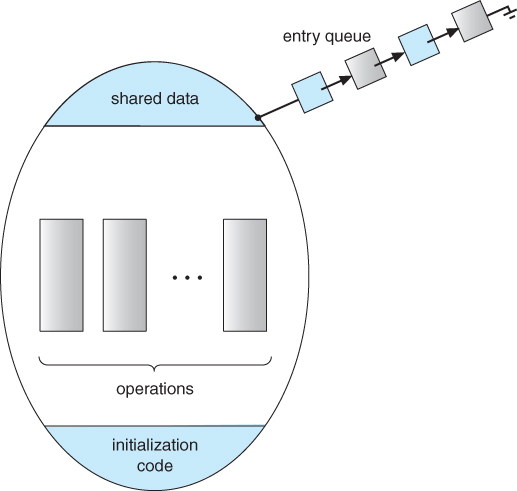

Why processes must coordinate
When processes share data, the result can depend on which one acts first. This is a race condition, and it can corrupt data. The part of a program that touches shared data is its critical section, and only one process should be in it at a time.

Tools for safe sharing
- Mutex: a lock that is either locked or unlocked. A process calls
lock()before its critical section andunlock()after. - Semaphore: a counter that saves wakeup signals, used with
down()andup(). - Message passing: processes on different computers share data with
send()andreceive(). - Monitor: bundles shared data with the operations that use it, so only one process can be inside at a time while the others wait in line.
Sources
- Tanenbaum, A. S., & Bos, H. (2014). Modern Operating Systems (4th ed.). Pearson.
- Race condition (Wikipedia)
- Semaphore (Wikipedia)
- Diagram: Operating Systems course notes, Chapter 5: Synchronization (University of Illinois Chicago)